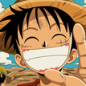
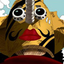

Easy Accordion Plugin with CSS & jQueryby Sunflowa Media
Demo
- First slide
LUFFY
One Piece is a manga and anime series created by mangaka Eiichiro Oda. One Piece focuses on a ragtag crew of pirates called Straw Hat Pirates led by Captain Monkey D. Luffy. Luffy's greatest ambition is to obtain the world's ultimate treasure, One Piece, and become Pirate King.
Read more- Second slide
ZORO
 One Piece is a manga and anime series created by mangaka Eiichiro Oda. One Piece focuses on a ragtag crew of pirates called Straw Hat Pirates led by Captain Monkey D. Luffy. Luffy's greatest ambition is to obtain the world's ultimate treasure, One Piece, and become Pirate King.
One Piece is a manga and anime series created by mangaka Eiichiro Oda. One Piece focuses on a ragtag crew of pirates called Straw Hat Pirates led by Captain Monkey D. Luffy. Luffy's greatest ambition is to obtain the world's ultimate treasure, One Piece, and become Pirate King.
Read more- One more slide
NAMI
 One Piece is a manga and anime series created by mangaka Eiichiro Oda. One Piece focuses on a ragtag crew of pirates called Straw Hat Pirates led by Captain Monkey D. Luffy. Luffy's greatest ambition is to obtain the world's ultimate treasure, One Piece, and become Pirate King.
One Piece is a manga and anime series created by mangaka Eiichiro Oda. One Piece focuses on a ragtag crew of pirates called Straw Hat Pirates led by Captain Monkey D. Luffy. Luffy's greatest ambition is to obtain the world's ultimate treasure, One Piece, and become Pirate King.
Read more- Another slide
SANJI
 One Piece is a manga and anime series created by mangaka Eiichiro Oda. One Piece focuses on a ragtag crew of pirates called Straw Hat Pirates led by Captain Monkey D. Luffy. Luffy's greatest ambition is to obtain the world's ultimate treasure, One Piece, and become Pirate King.
One Piece is a manga and anime series created by mangaka Eiichiro Oda. One Piece focuses on a ragtag crew of pirates called Straw Hat Pirates led by Captain Monkey D. Luffy. Luffy's greatest ambition is to obtain the world's ultimate treasure, One Piece, and become Pirate King.
Read more- Wow one more
USOPP
One Piece is a manga and anime series created by mangaka Eiichiro Oda. One Piece focuses on a ragtag crew of pirates called Straw Hat Pirates led by Captain Monkey D. Luffy. Luffy's greatest ambition is to obtain the world's ultimate treasure, One Piece, and become Pirate King.
Read more- Last one
CHOPPER
 One Piece is a manga and anime series created by mangaka Eiichiro Oda. One Piece focuses on a ragtag crew of pirates called Straw Hat Pirates led by Captain Monkey D. Luffy. Luffy's greatest ambition is to obtain the world's ultimate treasure, One Piece, and become Pirate King.
One Piece is a manga and anime series created by mangaka Eiichiro Oda. One Piece focuses on a ragtag crew of pirates called Straw Hat Pirates led by Captain Monkey D. Luffy. Luffy's greatest ambition is to obtain the world's ultimate treasure, One Piece, and become Pirate King.
Read more